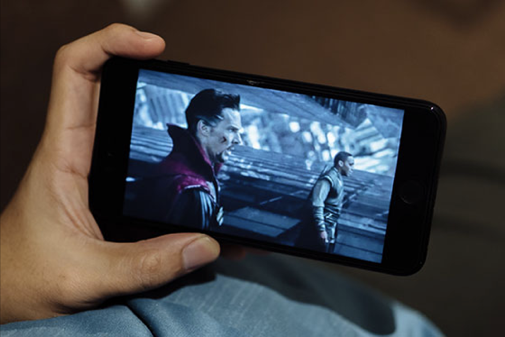

(Fueling your passion with hidden gems and cinematic treasures from
Indian cinema.)
Home
READERS! I must tell you, this movie watching is so addictive that it
just keeps you hooked to it for hours. As much as people like to
restrain movies just from entertainment, more it justifies that movies
provide us a lot more than. They teach us several minute findings of
our own society which we ignore on a daily basis.
Whether we stream them on our laptops, enjoy them in theaters, or
slide them into DVD players to watch on our TVs, movies are part of
what it means to be socially connected in the twenty-first century.
Despite its significant role in our lives, the act of watching films
remains an area of social activity that is little studied, and thus,
little understood. In "Watching Films", an international cast of
contributors correct this problem with a comprehensive investigation
of movie going, cinema exhibition, and film reception around the
world. With a focus on the social, economic, and cultural factors that
influence how we watch and think about movies, this volume centers its
investigations on four areas of inquiry: Who watches films? Under what
circumstances? What consequences and affects follow? And what do these
acts of consumption mean?

Responding to these questions, the contributors provide both
historical perspective and fresh insights about the ways in which new
viewing arrangements and technologies influence how films get watched
everywhere from Canada to China to Ireland.A long-overdue
consideration of an important topic, "Watching Films" provides an
engrossing overview of how we do just that in our homes and across the
globe."